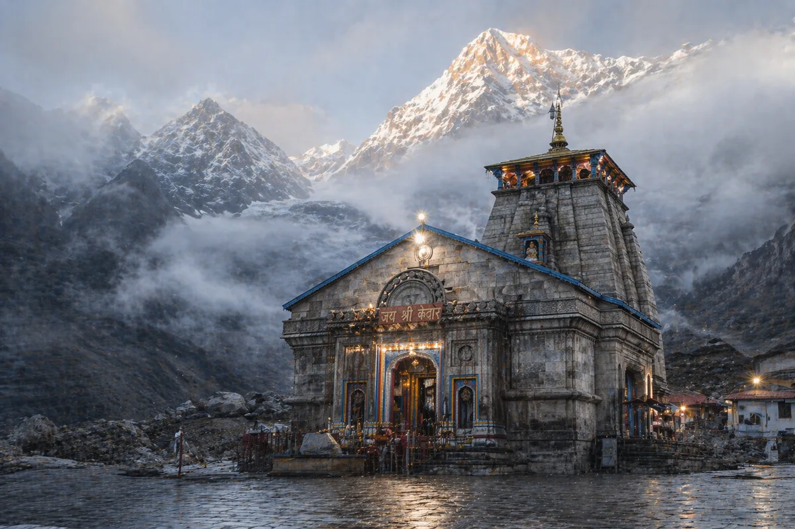

Spiritual Pilgrimage
Chardham Yatra
from Ahmedabad
Yamunotri · Gangotri · Kedarnath · Badrinath
Enquire NowAbout the Chardham Yatra
The Chardham Yatra is one of the most sacred pilgrimage circuits in Hinduism, covering four holy sites in the Himalayas: Yamunotri, Gangotri, Kedarnath, and Badrinath. Undertaking this journey requires careful planning, especially regarding transportation, due to the challenging mountainous terrain.
At Spectrum Tour and Travel, we specialise in providing robust, comfortable, and well-maintained Tempo Travellers and luxury buses for groups traveling from Ahmedabad. Our drivers are highly experienced on steep, hilly terrains, ensuring your safety and peace of mind throughout the yatra.
What is Included
Fleet and Comfort
Well-Maintained Vehicles
- 14, 17 and 20-seater AC Tempo Travellers for medium-sized groups
- Luxury mini-buses for larger families and corporate pilgrimages
- GPS navigation and CCTV installed in all fleet vehicles
- Vehicles sanitised and inspected before every trip
Drivers and Service
Hill-Expert Drivers
- Only our most experienced Uttarakhand-route drivers assigned to Yatra duties
- Uniformed drivers with valid ID cards and all required permits
- Quotes include driver allowances, state taxes and toll taxes
- Typically 10 to 14 days; pace adjusted for senior and elderly travellers
Why Choose Spectrum for Pilgrimage?
We understand that a pilgrimage is a deeply personal and spiritual experience. Vehicle breakdowns or unprofessional behaviour can ruin the serenity of the journey. By choosing Spectrum Tour, you ensure a hygienic vehicle, polite staff, and 24-hour backend support throughout your yatra.
Founded in 2008, Spectrum has spent over 16 years building trust with Gujarat's pilgrim community. We book your transport so you can focus on your darshan.